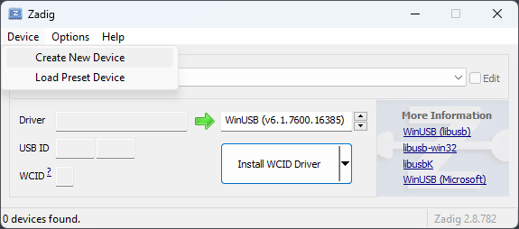

flash.comma.ai
This tool allows you to flash AGNOS onto your comma device.
AGNOS is the Ubuntu-based operating system for your comma 3/3X.
Requirements
- A web browser which supports WebUSB (such as Google Chrome, Microsoft Edge, Opera), running on Windows, macOS, Linux, or Android.
- A USB-C cable to power your device outside the car.
- Another USB-C cable to connect the device to your computer.
USB Driver
You need additional driver software for Windows before you connect your device.
- Download and install Zadig.
-
Under
Devicein the menu bar, selectCreate New Device.  -
Fill in three fields. The first field is just a description and you can fill in anything.
The next two fields are very important. Fill them in with
05C6and9008respectively. Press "Install Driver" and give it a few minutes to install.
No additional software is required for macOS or Linux.
QDL Mode
Follow these steps to put your device into QDL mode:
- Power off the device and wait for the LEDs to switch off.
- Connect the device to your computer using the USB-C port (port 2).
- Connect power to the OBD-C port (port 1).
- The device then should be visible as an option when choosing the device to flash

Flashing
After your device is in QDL mode, you can click the button to start flashing. A prompt may appear to select a device; choose the device starts with QUSB_BULK.
The process can take 30+ minutes depending on your internet connection and system performance. Do not unplug the device until all steps are complete.
Troubleshooting
Too slow
It is recommended that you use a USB 3.0 cable when flashing since it will speed up the flashing time by a lot.
Cannot enter QDL
Try using a different USB cable or USB port. Sometimes USB 2.0 ports work better than USB 3.0 (blue) ports. If you're using a USB hub, try connecting the device directly to your computer, or alternatively use a USB hub between your computer and the device.
My device's screen is blank
The device screen will be blank in QDL mode, but you can verify that it is in QDL if the device shows up when you press the Flash icon.
After flashing, device says unable to mount data partition
This is expected after the filesystem is erased. Press confirm to finish resetting your device.
General Tips
- Try another computer or OS
- Try different USB ports on your computer
- Try different USB-C cables, including the OBD-C cable that came with the device
Other questions
If you need help, join our Discord server and go to the #hw-three-3x channel.